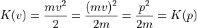

8. Sampling In Continuous Graphical Models¶
As we know inference is asking conditional probability questions to the models, the exact solution of these problems quickly becomes intractable. Sampling algorithms can be used to get approximate inference results by generating a large number of coherent samples that converge to original distribution. In this notebook we take a look at some of the sampling algorithms that can be used to sample from continuous case models.
Hamiltonian Monte Carlo
No-U-Turn Sample
8.1. Hamiltonian Monte Carlo¶
Hamiltonian Monte Carlo (HMC) is a Markov Chain Monte Carlo (MCMC) that proposes future states in Markov Chain using Hamiltonian Dynamics. Before understanding the HMC algorithm lets first understand Hamiltonian Dynamics.
8.1.1. Hamiltonian Dynamics¶
Hamiltonian dynamics are used to describe how objects move throughout a system. Hamiltonian dynamics is defined in terms of object location  and its momentum
and its momentum  (equivalent to object’s mass times velocity) at some time
(equivalent to object’s mass times velocity) at some time  . For each location of object there is an associated potential energy and with momentum there is associated kinetic energy
. For each location of object there is an associated potential energy and with momentum there is associated kinetic energy  . The total energy of system is constant and is called as Hamiltonian , defined as the sum of
potential energy and kinetic energy:
. The total energy of system is constant and is called as Hamiltonian , defined as the sum of
potential energy and kinetic energy:
The partial derivatives of the Hamiltonian determines how position and momentum change over time , according to Hamiltonian’s equations:
The above equations operates on a d-dimensional position vector :math:`x` and a d-dimensional momentum vector :math:`p`, for .
Thus, if we can evaluate and and have a set of initial conditions i.e an initial position and initial momentum at time , then we can predict the location and momentum of object at any future time by simulating dynamics for a time duration  . ### Discretizing Hamiltonian’s Equations
. ### Discretizing Hamiltonian’s Equations
The Hamiltonian’s equations describes an object’s motion in regard to time, which is a continuous variable. For simulating dynamics on a computer, Hamiltonian’s equations must be numerically approximated by discretizing time. This is done by splitting the time interval into small intervals of size  .
.
8.1.1.1. Euler’s Method¶
For Hamiltonian’s equations, this method performs the following steps, for each component of position and momentum (indexed by )
Even better results can be obtained if we use updated value of momentum in later equation
This method is called as Modified Euler’s method.
8.1.1.2. Leapfrog Method¶
Unlike Euler’s method where we take full steps for updating position and momentum in leapfrog method we take half steps to update momentum value.
Leapfrog method yields even better result than Modified Euler Method.
8.1.1.3. Example: Simulating Hamiltonian dynamics of a simple pendulum¶
Imagine a bob of mass  attached to a string of length whose one end is fixed at point . The equilibrium position of the pendulum is at . Now keeping string stretched we move it some distance horizontally say
attached to a string of length whose one end is fixed at point . The equilibrium position of the pendulum is at . Now keeping string stretched we move it some distance horizontally say  . The corresponding change in potential energy is given by
. The corresponding change in potential energy is given by
$ U(h) = mg:nbsphinx-math:Delta `h $, where :math:Delta h` is change in height and  is gravity of earth.
is gravity of earth.
Using simple trigonometry one can derive relationship between and .
Kinetic energy of bob can be written in terms of momentum as

Further, partial derivatives of potential and kinetic energy can be written as:
and
Here is a animation that uses these equations to simulate the dynamics of simple pendulum  The sub-plot in the right upper half of the output demonstrates the energies. The red portion of first bar plot represents potential energy and black represents kinetic energy. The second bar plot represents the Hamiltonian. The lower right sub-plot shows the phase space showing how momentum and position are varying. We can see that phase space maps out an ellipse without
deviating from its path. In case of Euler method the particle doesn’t fully trace a ellipse instead diverges slowly towards infinity. One can clearly see that value of position and momentum are not completely random, but takes a deterministic circular kind of trajectory. If we use Leapfrog method to propose future states than we can avoid random-walk behavior which we saw in Metropolis-Hastings algorithm. This is the main reason for good performance of HMC algorithm.
The sub-plot in the right upper half of the output demonstrates the energies. The red portion of first bar plot represents potential energy and black represents kinetic energy. The second bar plot represents the Hamiltonian. The lower right sub-plot shows the phase space showing how momentum and position are varying. We can see that phase space maps out an ellipse without
deviating from its path. In case of Euler method the particle doesn’t fully trace a ellipse instead diverges slowly towards infinity. One can clearly see that value of position and momentum are not completely random, but takes a deterministic circular kind of trajectory. If we use Leapfrog method to propose future states than we can avoid random-walk behavior which we saw in Metropolis-Hastings algorithm. This is the main reason for good performance of HMC algorithm.
8.1.2. Hamiltonian and Probability: Canonical Distributions¶
Now having a bit of understanding what is Hamiltonian and how we can simulate Hamiltonian dynamics, we now need to understand how we can use these Hamiltonian dynamics for MCMC. We need to develop some relation between probability distribution and Hamiltonian so that we can use Hamiltonian dynamics to explore the distribution. To relate to target distribution we use a concept from statistical mechanics known as the canonical distribution. For any energy function
, defined over a set of variables  , we can find corresponding
, we can find corresponding
, where  is normalizing constant called Partition function and is temperature of system. For our use case we will consider .
is normalizing constant called Partition function and is temperature of system. For our use case we will consider .
Since, the Hamiltonian is an energy function for the joint state of “position”, and “momentum”, , so we can define a joint distribution for them as follows:
Since , we can write above equation as
Furthermore we can associate probability distribution with each of the potential and kinetic energy ( with potential energy and , with kinetic energy). Thus, we can write above equation as:
,where is new normalizing constant. Since joint distribution factorizes over and , we can conclude that and are independent. Because of this independence we can choose any distribution from which we want to sample the momentum variable. A common choice is to use a zero mean and unit variance Normal distribution The target distribution of interest from which we actually want to sample from is associated with
potential energy.
Thus, if we can calculate , then we are in business and we can use Hamiltonian dynamics to generate samples.
8.1.3. Hamiltonian Monte Carlo Algorithm¶
Given initial state , stepsize , number of steps  , log density function
, log density function  , number of samples to be drawn
, number of samples to be drawn  , we can write HMC algorithm as:
, we can write HMC algorithm as:
set $m = 0 $
repeat until
set
Sample new initial momentum ~
Set
repeat for
stepsSet
Calculate acceptance probability
Draw a random number u ~ Uniform(0, 1)
if then
is a function that runs a single iteration of Leapfrog method.
In practice sometimes instead of explicitly giving number of steps , we use trajectory length which is product of number of steps , and stepsize .
8.1.4. Hamiltonian Monte Carlo in pgmpy¶
In pgmpy one can use Hamiltonian Monte Carlo algorithm by importing HamiltonianMC from pgmpy.inference.continuous
[1]:
from pgmpy.sampling import HamiltonianMC as HMC
Lets use the HamiltonianMC implementation and draw some samples from a multivariate disrtibution $ P(x) = N(\mu, \Sigma)$, where
[2]:
%matplotlib inline
from pgmpy.factors.distributions import GaussianDistribution as JGD
from pgmpy.sampling import LeapFrog, GradLogPDFGaussian
import numpy as np
import matplotlib.pyplot as plt
np.random.seed(77777)
# Defining a multivariate distribution model
mean = np.array([0, 0])
covariance = np.array([[1, 0.97], [0.97, 1]])
model = JGD(['x', 'y'], mean, covariance)
# Creating a HMC sampling instance
sampler = HMC(model=model, grad_log_pdf=GradLogPDFGaussian, simulate_dynamics=LeapFrog)
# Drawing samples
samples = sampler.sample(initial_pos=np.array([7, 0]), num_samples = 1000,
trajectory_length=10, stepsize=0.25)
plt.figure(figsize=(7, 7)); plt.hold(True)
plt.scatter(samples['x'], samples['y'], label='HMC samples', color='k')
plt.plot(samples['x'][0:100], samples['y'][0:100], 'r-', label='First 100 samples')
plt.legend(); plt.hold(False)
plt.show()
/home/utgup/anaconda3/lib/python3.5/site-packages/ipykernel/__main__.py:18: MatplotlibDeprecationWarning: pyplot.hold is deprecated.
Future behavior will be consistent with the long-time default:
plot commands add elements without first clearing the
Axes and/or Figure.
/home/utgup/anaconda3/lib/python3.5/site-packages/matplotlib/__init__.py:917: UserWarning: axes.hold is deprecated. Please remove it from your matplotlibrc and/or style files.
warnings.warn(self.msg_depr_set % key)
/home/utgup/anaconda3/lib/python3.5/site-packages/matplotlib/rcsetup.py:152: UserWarning: axes.hold is deprecated, will be removed in 3.0
warnings.warn("axes.hold is deprecated, will be removed in 3.0")
/home/utgup/anaconda3/lib/python3.5/site-packages/ipykernel/__main__.py:21: MatplotlibDeprecationWarning: pyplot.hold is deprecated.
Future behavior will be consistent with the long-time default:
plot commands add elements without first clearing the
Axes and/or Figure.
One, can change the values of parameters stepsize and trajectory_length and see the convergence towards target distribution. For example set the value of stepsize = 0.5 and let rest parameters have the same value and see the output. With this you might get a feel that performance of HMC critically depends upon choice of these parameters.
The stepsize parameter for HamiltonianMC implementation is optional, but should be use only as starting point value. One should hand-tune the model using this stepsize value for good performance.
8.1.5. Hamiltonian Monte Carlo with dual averaging¶
In pgmpy we have implemented an another variant of HMC in which we adapt the stepsize during the course of sampling thus completely eliminates the need of specifying stepsize (but still requires trajectory_length to be specified by user). This variant of HMC is known as Hamiltonian Monte Carlo with dual averaging (HamiltonianMCda in pgmpy). One can also use Modified Euler to simulate dynamics instead of leapfrog, or even can plug-in one’s own implementation for simulating dynamics using
base class for it.
[3]:
from pgmpy.sampling import HamiltonianMCDA as HMCda, ModifiedEuler
# Using modified euler instead of Leapfrog for simulating dynamics
sampler_da = HMCda(model, GradLogPDFGaussian, simulate_dynamics=ModifiedEuler)
# num_adapt is number of iteration to run adaptation of stepsize
samples = sampler_da.sample(initial_pos=np.array([7, 0]), num_adapt=10, num_samples=10, trajectory_length=10)
print(samples)
print("\nAcceptance rate:",sampler_da.acceptance_rate)
x y
0 7.000000e+00 0.000000
1 3.458460e-323 0.000000
2 3.458460e-323 0.000000
3 3.458460e-323 0.000000
4 3.458460e-323 0.000000
5 3.614684e+00 0.780326
6 1.316832e+00 0.643645
7 1.316832e+00 0.643645
8 -1.111247e-01 -0.306480
9 1.163398e+00 1.357304
Acceptance rate: 0.5
/home/utgup/anaconda3/lib/python3.5/site-packages/pgmpy-0.1.6-py3.5.egg/pgmpy/sampling/HMC.py:111: RuntimeWarning: divide by zero encountered in double_scalars
return (1/(acceptance_prob ** a)) > (2**(-a))
The values returned by HamiltonianMC and HamiltonianMCda depends upon the installation available in the working environment. In working env has a installation of pandas, it returns a pandas.DataFrame object otherwise it returns a numpy.recarry (numpy recorded arrays).
Lets now use base class for simulating hamiltonian dynamics and write our own Modified Euler method
[4]:
from pgmpy.sampling import BaseSimulateHamiltonianDynamics
class ModifiedEulerMethod(BaseSimulateHamiltonianDynamics):
def __init__(self, model, position, momentum, stepsize, grad_log_pdf, grad_log_position=None):
BaseSimulateHamiltonianDynamics.__init__(self, model, position, momentum,
stepsize, grad_log_pdf, grad_log_position)
self.new_position, self.new_momentum, self.new_grad_logp = self._get_proposed_values()
def _get_proposed_values(self):
new_momentum = self.momentum + self.stepsize * self.grad_log_position
new_position = self.position + self.stepsize * new_momentum
grad_log, _ = self.grad_log_pdf(new_position, self.model).get_gradient_log_pdf()
return new_position, new_momentum, grad_log
hmc_sampler = HMC(model, GradLogPDFGaussian, simulate_dynamics=ModifiedEulerMethod)
samples = hmc_sampler.sample(initial_pos=np.array([0, 0]), num_samples=10, trajectory_length=10, stepsize=0.2)
print(samples)
print("Total accepted proposal:", hmc_sampler.accepted_proposals)
x y
0 0.000000 0.000000
1 0.624716 0.680638
2 0.928227 1.143031
3 -0.234847 -0.118653
4 -1.633648 -1.977647
5 -1.282438 -1.442565
6 -1.734446 -1.282935
7 -1.552439 -1.300669
8 0.729025 0.793016
9 -0.489195 -0.430182
Total accepted proposal: 10.0
8.2. No-U-Turn Sampler¶
Both (HMC and HMCda) of these algorithms requires some hand-tuning from user, which can be time consuming especially for high dimensional complex model. No-U-Turn Sampler(NUTS) is an extension of HMC that eliminates the need to specify the trajectory length but requires user to specify stepsize.
NUTS, removes the need of parameter number of steps by considering a metric to evaluate whether we have ran Leapfrog algorithm for long enough, that is when running the simulation for more steps would no longer increase the distance between the proposal value of and initial value of
At high level, NUTS uses the leapfrog method to trace out a path forward and backward in fictitious time, first running forwards or backwards 1 step, the forwards and backwards 2 steps, then forwards or backwards 4 steps etc. This doubling process builds a balanced binary tree whose leaf nodes correspond to position-momentum states. The doubling process is halted when the sub-trajectory from the leftmost to the rightmost nodes of any balanced subtree of the overall binary tree starts to double back on itself (i.e., the fictional particle starts to make a “U-Turn”). At this point NUTS stops the simulation and samples from among the set of points computed during the simulation, taking are to preserve detailed balance.
Lets use NUTS and draw some samples.
[5]:
from pgmpy.sampling import NoUTurnSampler as NUTS
mean = np.array([1, 2, 3])
covariance = np.array([[2, 0.4, 0.5], [0.4, 3, 0.6], [0.5, 0.6, 4]])
model = JGD(['x', 'y', 'z'], mean, covariance)
# Creating sampling instance of NUTS
NUTS_sampler = NUTS(model=model, grad_log_pdf=GradLogPDFGaussian)
samples = NUTS_sampler.sample(initial_pos=[10, 10, 0], num_samples=2000, stepsize=0.25)
from mpl_toolkits.mplot3d import Axes3D
fig = plt.figure(figsize=(9, 9))
ax = Axes3D(fig)
plt.hold(True)
ax.scatter(samples['x'], samples['y'], samples['z'], label='NUTS Samples')
ax.plot(samples['x'][:50], samples['y'][:50], samples['z'][:50], 'r-', label='Warm-up period')
plt.legend()
plt.title("Scatter plot of samples")
plt.hold(False)
plt.show()
/home/utgup/anaconda3/lib/python3.5/site-packages/pgmpy-0.1.6-py3.5.egg/pgmpy/sampling/NUTS.py:130: RuntimeWarning: invalid value encountered in true_divide
if np.random.rand() < candidate_set_size2 / (candidate_set_size2 + candidate_set_size):
/home/utgup/anaconda3/lib/python3.5/site-packages/ipykernel/__main__.py:13: MatplotlibDeprecationWarning: pyplot.hold is deprecated.
Future behavior will be consistent with the long-time default:
plot commands add elements without first clearing the
Axes and/or Figure.
/home/utgup/anaconda3/lib/python3.5/site-packages/matplotlib/__init__.py:917: UserWarning: axes.hold is deprecated. Please remove it from your matplotlibrc and/or style files.
warnings.warn(self.msg_depr_set % key)
/home/utgup/anaconda3/lib/python3.5/site-packages/matplotlib/rcsetup.py:152: UserWarning: axes.hold is deprecated, will be removed in 3.0
warnings.warn("axes.hold is deprecated, will be removed in 3.0")
/home/utgup/anaconda3/lib/python3.5/site-packages/ipykernel/__main__.py:18: MatplotlibDeprecationWarning: pyplot.hold is deprecated.
Future behavior will be consistent with the long-time default:
plot commands add elements without first clearing the
Axes and/or Figure.
The Warm-up period a.k.a Burn-in period of Markov chain , is the amount of time it takes for the markov chain to reach the target stationary distribution. The samples generated during this period of Markov chain are usually thrown away because they don’t show the characteristics of distribution from which they are sampled.
Since it is difficult to visualize more than 3-Dimensions we generally use a trace-plot of Markov chain to determine this warm-up period.
[6]:
plt.figure(figsize=(9, 9))
plt.hold(True)
plt.plot(samples['x'],'b-', label='x')
plt.plot(samples['y'], 'g-', label='y')
plt.plot(samples['z'], 'c-', label='z')
plt.plot([50, 50], [-5, 9], 'k-', label='Warm-up period', linewidth=4)
plt.legend()
plt.title("Trace plot of Markov Chain")
plt.hold(False)
plt.show()
/home/utgup/anaconda3/lib/python3.5/site-packages/ipykernel/__main__.py:2: MatplotlibDeprecationWarning: pyplot.hold is deprecated.
Future behavior will be consistent with the long-time default:
plot commands add elements without first clearing the
Axes and/or Figure.
from ipykernel import kernelapp as app
/home/utgup/anaconda3/lib/python3.5/site-packages/matplotlib/__init__.py:917: UserWarning: axes.hold is deprecated. Please remove it from your matplotlibrc and/or style files.
warnings.warn(self.msg_depr_set % key)
/home/utgup/anaconda3/lib/python3.5/site-packages/matplotlib/rcsetup.py:152: UserWarning: axes.hold is deprecated, will be removed in 3.0
warnings.warn("axes.hold is deprecated, will be removed in 3.0")
/home/utgup/anaconda3/lib/python3.5/site-packages/ipykernel/__main__.py:9: MatplotlibDeprecationWarning: pyplot.hold is deprecated.
Future behavior will be consistent with the long-time default:
plot commands add elements without first clearing the
Axes and/or Figure.

8.2.1. No-U-Turn Sampler with dual averaging¶
Like HMCda in No-U-Turn sampler with dual averaging (NUTSda) we adapt the stepsize during the course of sampling thus completely eliminates the need of specifying stepsize. Thus we can use NUTSda without any hand tuning at all.
[7]:
from pgmpy.sampling import NoUTurnSamplerDA as NUTSda
NUTSda_sampler = NUTSda(model=model, grad_log_pdf=GradLogPDFGaussian)
samples = NUTSda_sampler.sample(initial_pos=[0.457420, 0.500307, 0.211056], num_adapt=10, num_samples=10)
print(samples)
x y z
0 0.457420 0.500307 0.211056
1 0.457420 0.500307 0.211056
2 0.457420 0.500307 0.211056
3 0.457420 0.500307 0.211056
4 1.822813 0.537422 0.005842
5 -0.195423 1.578560 1.047900
6 0.522322 0.176574 1.763822
7 0.124225 0.655759 4.003954
8 0.124225 0.655759 4.003954
9 0.337818 1.170382 4.146218
Apart from the sample method all the four algorithms (HMC, HMCda, NUTS, NUTSda) provides another method to sample from model named generate_sample method. generate_sample method returns a generator type object whose each iteration yields a sample. The sample returned is a simple numpy.array object. The arguments for generate_sample method and sample method for all algorithms are same
[8]:
generate_samples = NUTSda_sampler.generate_sample(initial_pos=[0.4574, 0.503, 0.211], num_adapt=10, num_samples=10)
samples = np.array([sample for sample in generate_samples])
print(samples)
[[ 1.23158312e+00 2.08966925e+00 5.47064070e+00]
[ 1.23158312e+00 2.08966925e+00 5.47064070e+00]
[ 1.23158312e+00 2.08966925e+00 5.47064070e+00]
[ 2.42754370e-04 -9.07581018e-01 2.22786641e+00]
[ 3.80037176e+00 4.20666799e+00 2.93898094e+00]
[ 1.84557224e+00 3.03691158e+00 5.05047756e+00]
[ 1.84557224e+00 3.03691158e+00 5.05047756e+00]
[ 1.90819711e+00 3.83294495e+00 4.98059422e+00]
[ 9.22139874e-01 4.11755511e+00 4.50041160e+00]
[ 9.22139874e-01 4.11755511e+00 4.50041160e+00]]
/home/utgup/anaconda3/lib/python3.5/site-packages/pgmpy-0.1.6-py3.5.egg/pgmpy/sampling/NUTS.py:412: RuntimeWarning: invalid value encountered in true_divide
if np.random.rand() < candidate_set_size2 / (candidate_set_size2 + candidate_set_size):
8.3. Support for coustom Models¶
One can also use HMC, HMCda, NUTS and NUTSda to sample from a user defined model, all one has to do is create class for finding log of probability density function and gradient log of probability density function using base class provided by pgmpy, and give this class as a parameter to grad_log_pdf argument in all of these algorithms (HMC[da], NUTS[da]).
In this example we will define our own logisitcs distribution and use NUTSda to sample from it.
The probability density of logistic distribution is given by:
Thus the log of this probability density function (potential energy function) can be written as:
And the gradient of potential energy :
[9]:
# Importing th base class structure for log and gradient log of probability density function
from pgmpy.sampling import BaseGradLogPDF
# Base class for user defined continuous factor
from pgmpy.factors.distributions import CustomDistribution
# Defining pdf of a Logistic distribution with mu = 5, s = 2
def logistic_pdf(x):
power = - (x - 5.0) / 2.0
return np.exp(power) / (2 * (1 + np.exp(power))**2)
# Calculating log of logistic pdf
def log_logistic(x):
power = - (x - 5.0) / 2.0
return power - np.log(2.0) - 2 * np.log(1 + np.exp(power))
# Calculating gradient log of logistic pdf
def grad_log_logistic(x):
power = - (x - 5.0) / 2.0
return - 0.5 - (2 / (1 + np.exp(power))) * np.exp(power) * (-0.5)
# Creating a logistic model
logistic_model = CustomDistribution(['x'], logistic_pdf)
# Creating a class using base class for gradient log and log probability density function
class GradLogLogistic(BaseGradLogPDF):
def __init__(self, variable_assignments, model):
BaseGradLogPDF.__init__(self, variable_assignments, model)
self.grad_log, self.log_pdf = self._get_gradient_log_pdf()
def _get_gradient_log_pdf(self):
return (grad_log_logistic(self.variable_assignments),
log_logistic(self.variable_assignments))
# Generating samples using NUTS
sampler = NUTSda(model=logistic_model, grad_log_pdf=GradLogLogistic)
samples = sampler.sample(initial_pos=np.array([0.0]), num_adapt=10000,
num_samples=10000)
x = np.linspace(-30, 30, 10000)
y = [logistic_pdf(i) for i in x]
plt.figure(figsize=(8, 8))
plt.hold(1)
plt.plot(x, y, label='real logistic pdf')
plt.hist(samples.values, normed=True, histtype='step', bins=200, label='Samples NUTSda')
plt.legend()
plt.hold(0)
plt.show()
/home/utgup/anaconda3/lib/python3.5/site-packages/pgmpy-0.1.6-py3.5.egg/pgmpy/sampling/NUTS.py:412: RuntimeWarning: invalid value encountered in true_divide
if np.random.rand() < candidate_set_size2 / (candidate_set_size2 + candidate_set_size):
/home/utgup/anaconda3/lib/python3.5/site-packages/ipykernel/__main__.py:45: MatplotlibDeprecationWarning: pyplot.hold is deprecated.
Future behavior will be consistent with the long-time default:
plot commands add elements without first clearing the
Axes and/or Figure.
/home/utgup/anaconda3/lib/python3.5/site-packages/matplotlib/__init__.py:917: UserWarning: axes.hold is deprecated. Please remove it from your matplotlibrc and/or style files.
warnings.warn(self.msg_depr_set % key)
/home/utgup/anaconda3/lib/python3.5/site-packages/matplotlib/rcsetup.py:152: UserWarning: axes.hold is deprecated, will be removed in 3.0
warnings.warn("axes.hold is deprecated, will be removed in 3.0")
/home/utgup/anaconda3/lib/python3.5/site-packages/ipykernel/__main__.py:49: MatplotlibDeprecationWarning: pyplot.hold is deprecated.
Future behavior will be consistent with the long-time default:
plot commands add elements without first clearing the
Axes and/or Figure.
[ ]: